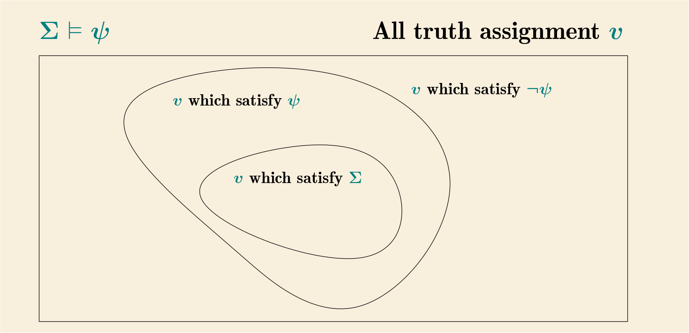
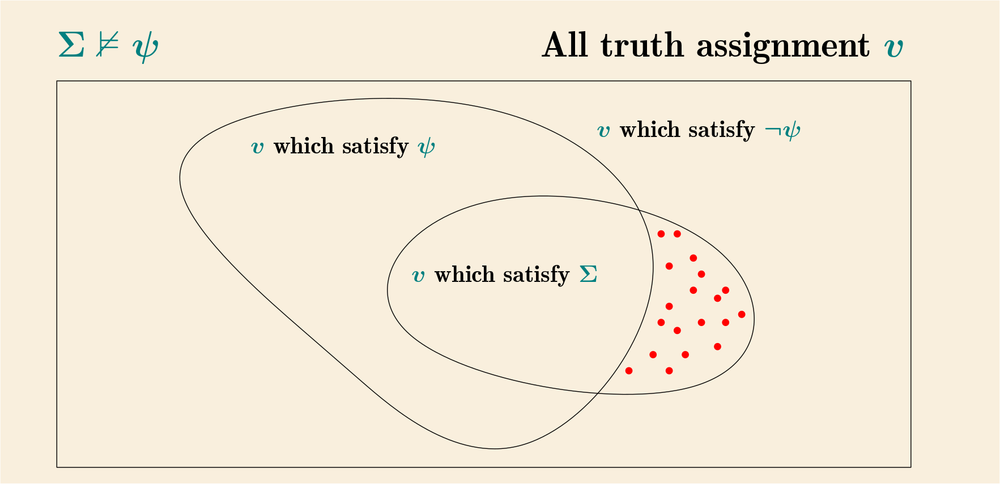

Compactness
- satisfiable
- 如果有一赋值（truth assignment）满足一个合式公式集合 \(\Sigma\) 中的每一个，则称 \(\Sigma\) 是可满足的（satisfiable）
例如 \(\Sigma = \{A_1, A_2 \rightarrow A_1 \}\)，由于赋值 \(v = \langle A_1 = T, A_2 = T \rangle\) 可满足 \(\Sigma\) 中的两个式子 （即在此赋值下两个式子都得值 \(T\)），故 \(\Sigma\) 可满足
又例如 \(\Sigma = \{A_1, \neg A_1 \}\)，没有一个赋值可以同时满足 \(\Sigma\) 中的两个式子，故 \(\Sigma\) 不可满足
Compactness Theorem
以下是这一节的主要定理
一个合式公式集合是可满足的，当且仅当其每一个有限子集都是可满足的
首先这里临时定义：如果一个合式公式集合 \(\Sigma\) 的每一个有限子集都可满足的话，称 \(\Sigma\) 为有限可满足（finitely satisfiable）； 所以 Compactness Theorem 表述的就是 有限可满足 跟 可满足 其实是等价的
注意：
如果 \(\Sigma\) 是 可满足 的话，则其自动就是 有限可满足 的 （因为如果有一个赋值能满足集合中的每一个式子，自然也能满足其任意子集中的每一个式子）
反过来，如果 \(\Sigma\) 是 有限可满足 的话，分两种情况
如果 \(\Sigma\) 本身就是 有限集合 的话，则它也就是 可满足 的（因为它就是本身的有限子集）
剩下需要证明的就是 \(\Sigma\) 是 无限集合 且是 有限可满足，则其是 可满足的 的
证明分两部分
证明的第一部分扩展 \(\Sigma\) 到最大：
首先，令 \(\alpha_1, \alpha_2, ...\) 为全体合式公式1，然后递归地定义：
\[ \begin{split} \Delta_0 & = \Sigma \\ \Delta_{n+1} & = \begin{cases} \Delta_n ; \alpha_{n+1} ~~~~~~~~~ \text{if this is finitely satisfiable} \\ \Delta_n ; \neg \alpha_{n+1} ~~~~~~ \text{otherwise} \\ \end{cases} \end{split} \]
（注：\(\Delta ; \alpha\) 是 \(\Delta \cup \{ \alpha \}\) 的简写）
即假如 \(\Delta_n ; \alpha_{n+1}\) 仍然是 有限可满足 那么令 \(\Delta_{n+1}\) 等于该集合
否则意味着 至少 有一个 有限子集 \(\Gamma_n \subset \Delta_n\) 使得 \(\Gamma_n ; \alpha_{n+1}\) 是 无法满足 的，所以：
- 对于任意 满足 \(\Gamma_n\) 的赋值 \(v\) 都无法满足 \(\alpha_{n+1}\)
- 对于任意 满足 \(\Gamma_n\) 的赋值 \(v\) 都满足 \(\neg \alpha_{n+1}\)
- 考虑 任意 有限子集 \(\Delta'_n \subset \Delta_n\)，首先存在赋值 \(v\) 满足 \(\Delta'_n \cup \Gamma_n\)（有限可满足性）， 即 \(v\) 同时满足 \(\Delta'_n\) 和 \(\Gamma_n\)，因此根据 2 \(v\) 也满足 \(\neg \alpha_{n+1}\)，所以 \(v\) 满足 \(\Delta'_n ; \neg \alpha_{n+1}\)
- 所以 \(\Delta_n ; \neg \alpha_{n+1}\) 也是有限可满足的2
通过这种方式从初始的有限可满足集合 \(\Sigma\) 出发，每次添加一个合式公式并保证新集合依然有限可满足；令 \(\Delta = \cup_n \Delta_n\)，可知
- \(\Sigma \subseteq \Delta\)
- 对任意合式公式 \(\alpha\)，要么 \(\alpha \in \Delta\) 要么 \(\neg \alpha \in \Delta\) 3
- \(\Delta\) 有限可满足，因为其任意有限子集必定可由某个 \(\Delta_n\) 所包含，而所有 \(\Delta_n\) 都是有限可满足的
证明的第二部分给出一个对所有命题符号的赋值 \(v\)：
\[ v(A) = \begin{cases} T ~~~~ A \in \Delta \\ F ~~~~ A \notin \Delta \\ \end{cases} \]
下面证明任意合式公式被该赋值满足当且仅当该公式属于 \(\Delta\)（Exercise 2）
令 \(\Lambda_u(\psi) = \begin{cases} \psi ~~~~ u = T \\ \neg \psi ~~~~ u = F \\ \end{cases}\)，易知任意赋值 \(v\) 满足 \(\Lambda_u(\psi)\) 当且仅当 \(u = \bar{v}(\psi)\) (+)
再令 \(S = \{ \psi ~|~ \Lambda_{\bar{v}(\psi)}(\psi) \in \Delta \}\)，即在 \(v\) 赋值下，使得 \(\Lambda_{\bar{v}(\psi)}(\psi)\) 属于 \(\Delta\) 的那些式子 \(\psi\)
下面证明 \(S\) 即全体合式公式：
首先所有命题符号 \(A\) 均属于 \(S\)，因为：
- 若 \(\bar{v}(A) = v(A) = T\)，由定义知 \(A \in \Delta\)，故 \(\Lambda_{\bar{v}(A)}(A) = A \in \Delta\)
- 若 \(\bar{v}(A) = v(A) = F\)，由定义知 \(A \notin \Delta\)，由 2 得 \(\neg A \in \Delta\)，故 \(\Lambda_{\bar{v}(A)}(A) = \neg A \in \Delta\)
第二，\(S\) 闭合于 \(\varepsilon_{\neg}\)，假设 \(\psi \in S\)，即 \(\Lambda_{\bar{v}(\psi)}(\psi) \in \Delta\)
- 由 2 得要么 \(\Lambda_{\bar{v}(\neg \psi)}(\neg \psi) \in \Delta\) (1) 要么 \(\Lambda_{\neg \bar{v}(\neg \psi)}(\neg \psi) = \Lambda_{\bar{v}(\psi)}(\neg \psi) \in \Delta\) (2)
- 但如果是 (2) 成立的话，跟 \(\Lambda_{\bar{v}(\psi)}(\psi) \in \Delta\) 矛盾，故只能 (1) 成立，所以 \(\neg \psi \in S\)
第三，\(S\) 闭合于 \(\varepsilon_{\square}\) 4，假设 \(\psi_1, \psi_2 \in S\)， 即 \(\Lambda_{\bar{v}(\psi_1)}(\psi_1), \Lambda_{\bar{v}(\psi_2)}(\psi_2) \in \Delta\)
- 由 2 得要么 \(\Lambda_{\bar{v}(\psi_1 \square \psi_2)}(\psi_1 \square \psi_2) \in \Delta\) (1)， 要么 \(\Lambda_{\neg \bar{v}(\psi_1 \square \psi_2)}(\psi_1 \square \psi_2) \in \Delta\) (2)
- 但如果是 (2) 成立的话，集合 \(\{
\Lambda_{\bar{v}(\psi_1)}(\psi_1), \Lambda_{\bar{v}(\psi_2)}(\psi_2),
\Lambda_{\neg \bar{v}(\psi_1 \square \psi_2)}(\psi_1 \square \psi_2)
\}\) 就是 \(\Delta\) 的有限子集，故应该存在一个赋值 \(v'\)
同时满足这三个式子，由 (+) 可得
- \(\bar{v}(\psi_1) = \bar{v'}(\psi_1)\)
- \(\bar{v}(\psi_2) = \bar{v'}(\psi_2)\)
- \(\neg \bar{v}(\psi_1 \square \psi_2) = \bar{v'}(\psi_1 \square \psi_2)\)
- 但这是矛盾的5，因为 \[ \begin{split} \bar{v}(\psi_1 \square \psi_2) & = \bar{\square}(\bar{v}(\psi_1), \bar{v}(\psi_2)) \\ & = \bar{\square}(\bar{v'}(\psi_1), \bar{v'}(\psi_2)) \\ & = \bar{v'}(\psi_1 \square \psi_2) = \neg \bar{v}(\psi_1 \square \psi_2) \\ \end{split} \] 故只能 (1) 成立，所以 \(\psi_1 \square \psi_2 \in S\)
故 \(S\) 是 inductive 集合，由 Induction Principle 得出 \(S\) 是全体合式公式集合
所以对任意合式公式 \(\psi\)，有 \(\Lambda_{\bar{v}(\psi)}(\psi) \in \Delta\)；即如果 \(\bar{v}(\psi) = T\) 则 \(\psi \in \Delta\)， 如果 \(\bar{v}(\psi) = F\) 则 \(\neg \psi \in \Delta\) 由 2 得 \(\psi \notin \Delta\)；所以就是 \(v\) 满足 \(\psi\) 当且仅当 \(\psi \in \Delta\)
由于 \(\Sigma \subseteq \Delta\)，故 \(v\) 满足 \(\Sigma\) 中的任意式子
Corollary 17A
如果 \(\Sigma \vDash \psi\)，则存在有限子集 \(\Sigma_0 \subseteq \Sigma\) 使得 \(\Sigma_0 \vDash \psi\)
下面要用到这一性质：\(\Sigma \nvDash \psi\) 当且仅当 \(\Sigma; \neg \psi\) 可满足 6
如果不存在这样的有限子集，则对任意有限子集 \(\Sigma' \subseteq \Sigma\) 都有 \(\Sigma' \nvDash \psi\)
故对任意有限子集 \(\Sigma' \subseteq \Sigma\) 都有 \(\Sigma'; \neg \psi\) 可满足
由 Compactness Theorem 可知 \(\Sigma; \neg \psi\) 可满足
于是 \(\Sigma \nvDash \psi\) 跟假设矛盾，故这样的有限子集必定是存在的
实际上，该 Corollary 和 Compactness Theorem 是等价的，下面由该 Corollary 可轻易证明 Compactness Theorem（Exercise 3）
首先假设 \(\Sigma\) 是有限可满足却不可满足的
设 \(\Sigma = \Sigma'; \psi\)，即任取一个 \(\Sigma\) 中的元素 \(\psi\)，剩下的元素组成 \(\Sigma'\)； 该集合不可满足当且仅当 \(\Sigma' \vDash \neg \psi\)
由 Corollary 17A 得出存在有限集合 \(\Sigma_0' \subseteq \Sigma'\)，使得 \(\Sigma_0' \vDash \neg \psi\)， 故 \(\Sigma_0'; \psi\) 不可满足
但注意到 \(\Sigma_0'; \psi\) 实际上是 \(\Sigma\) 的有限子集，跟有限可满足性矛盾，故 \(\Sigma\) 必定是可满足的
Effectiveness and Computability
当我们说：对于一个合式公式集合 \(\Sigma\) 以及一个公式 \(\psi\) 是否有一个有效的过程（effective procedure）判断 \(\Sigma \vDash \psi\)
那么何为有效的过程呢？这里指的是满足如下的过程：它应该包含精确的指令序列（e.g. 即程序）来描述如何执行该过程， 该程序只能有有限长度，否则任何机器和人都无法执行；再有，对于像上述那种判定过程，该程序应该在有限步之后给出结果； 最后，该程序不能要求任何需要洞察/创意等的介入，必须可以被机械地执行
总而言之，就是一个时间空间上均有限的机械步骤，但这里我们并不限制有限的大小
另外，上述的定义其实是 informal 的：
Of course the foregoing description can hardly be considered a precise definition of the word “effective”. And, in fact, that word will be used only in an informal intuitive way throughout this book. (In Chapter 3 we will meet a precise counterpart, “recursive.”) But as long as we restrict ourselves to positive assertions that there does exist an effective procedure of a certain sort, the informal approach suffices. We simply display the procedure, show that it works, and people will agree that it is effective. (But this relies on the empirical fact that procedures which appear effective to one mathematician also appear so to others.) If we wanted a negative result, that there did not exist an effective procedure of a certain sort, then this informal viewpoint would be inadequate. (In Chapter 3 we do want to obtain just such negative results.) Because the notion of effectiveness is informal, definitions and theorems involving it will be marked with a star
⚹ 可判定性
- ⚹ Decidable
- 一个表达式集合 \(\Sigma\) 是可判定（decidable）的意思是：存在一个有效过程，对于给定的任意表达式 \(\alpha\)， 可判定是否 \(\alpha \in \Sigma\)（即当 \(\alpha \in \Sigma\) 返回 yes, 当 \(\alpha \notin \Sigma\) 返回 no）
例如：
所有的有限集合都可判定
因为可以将所有有限个成员全部列出来，然后程序可以逐一检查对比输入
不是所有无限集合都可判定
假如都可判定，则每一个集合都至少有一个有效过程可对其进行判定（注意判定一个集合 \(\Sigma\) 的有效过程只能判定该集合而不能判定其他不同的集合），所以这些表达式集合的数量必须不多于有效过程的数量； 但表达式集合的数量是不可数的（\(2^{\aleph_0}\)，因为是全体表达式的 power set），而全体有效过程的数量却是可数的 （\(\aleph_0\)，因为有效过程由其有限长度的指令定义，故可以与某个自然数对应）
⚹ Theorem 17B
存在有效过程判定任意一个表达式是否是合式公式
1.3 节里的那个 parser algorithm 就是这么个算法；另一种意思就是：所有合式公式组成的集合是可判定的
⚹ Theorem 17C
对于一个有限合式公式集合 \(\Sigma; \psi\)，存在有效过程判定是否 \(\Sigma \vDash \psi\)
1.2 节里的真值表方法满足要求
⚹ Corollary 17D
对于一个有限式子集合 \(\Sigma\)，其重言式推论集合（set of tautological consequences）是可判定的； 特别地，重言式集合（set of tautologies）是可判定的（因为重言式集合就是空集的重言式推论集）
直接用 Theorem 17C 中的有效过程（真值表方法），输入任意式子即可判定是否是 \(\Sigma\) 的 tautological consequence 了
⚹ 半可判定性
- ⚹ Semidecidable
- 一个表达式集合 \(\Sigma\) 是半可判定（semidecidable）的意思是：存在一个有效过程，对于给定的任意表达式 \(\alpha\)， 当且仅当 \(\alpha \in \Sigma\) 的时候可获得判定（即如果 \(\alpha \notin \Sigma\)，则该过程不一定能给出答案）
- ⚹ Effectively Enumerable
- 一个表达式集合 \(\Sigma\) 是有效可枚举（effectively enumerable）的意思是：存在一个有效过程， 能按某种顺序将 \(\Sigma\) 中的所有成员枚举出来（注意，如果 \(\Sigma\) 是无限集合，则这个枚举过程永远不会结束， 但对于其中任意一个成员，都在某个有限时间内能被枚举出来）
⚹ Theorem 17E
一个表达式集合是有效可枚举的当且仅当它是半可判定的
如果集合 \(\Sigma\) 是有效可枚举的，则有一个有效过程可以不断地输出该集合中的成员，对于任意一个表达式 \(\psi\)， 如果 \(\psi \in \Sigma\)，则经过一段（可能相当长的）有限的时间后必定会出现，此时可输出 yes；如果 \(\psi \notin \Sigma\) 则永远不会有输出；故是半可判定的
反过来，如果该集合是半可判定的，而我们希望能枚举它的全部成员：首先是可以枚举所有的表达式 \(\psi_1, \psi_2, \psi_3, ...\) 的， 但不可以直接逐一地都执行那个半可判定的有效过程，因为如果某个 \(\psi_i \notin \Sigma\)，该过程有可能会一直不停机， 故需要调整一下方法，例如：
- 对 \(\psi_1\) 执行该过程 1 分钟进行判定
- 对 \(\psi_1\) 执行该过程 2 分钟进行判定，对 \(\psi_2\) 执行该过程 2 分钟进行判定
- 对 \(\psi_1\) 执行该过程 3 分钟进行判定，对 \(\psi_2\) 执行该过程 3 分钟进行判定，对 \(\psi_3\) 执行该过程 3 分钟进行判定
- …
对任意一个成员来说，总会有一个足够大的步数 \(n\) 包含它并且有足够长的时间足以判定它的 membership 并输出出来
显然可判定集合也是半可判定集合，故也是有效可枚举的
⚹ Theorem 17F
一个表达式集合是可判定的，当且仅当该集合以及其补集（complement，相对于全体表达式集合而言）都是有效可枚举的
这个 Theorem 又称为 “Kleene’s theorem” (Exercise 8)
如果 \(\Sigma\) 可判定，则对所有表达式 \(\psi_1, \psi_2, \psi_3, ...\) 逐一执行其判定过程，过滤只返回 yes 的就可以获得该集合有效可枚举的过程；过滤只返回 no 的就可以获得该集合补集的有效可枚举的过程
反过来，如果存在 \(\Sigma\) 的有效可枚举过程 \(P\) 以及 \(\Sigma\) 补集的有效可枚举过程 \(P'\)，对任意输入 \(\alpha\)：
- 执行 \(P\) 1 分钟看 \(\alpha\) 是否在其输出中，执行 \(P'\) 1 分钟看 \(\alpha\) 是否在其输出中
- 类似上面，不过各执行 2 分钟
- 类似上面，不过各执行 3 分钟
- …
总会有一个足够大的步数 \(n\) 使得要么 \(P\) 要么 \(P'\) 会输出 \(\alpha\)，则相应返回 yes/no 即可
⚹ Theorem 17G
如果 \(\Sigma\) 是一个可判定的合式公式集合，那么它的重言式推论集合（set of tautological consequences） 是有效可枚举（半可判定）的
实际上 \(\Sigma\) 只需要有效可枚举的即可，例如枚举出 \(\psi_1, \psi_2, \psi_3, ...\)，那么对于任意一个合式公式 \(\tau\)， 可逐一测试
\[ \begin{split} \emptyset \vDash \tau \\ \{\psi_1\} \vDash \tau \\ \{\psi_1, \psi_2\} \vDash \tau \\ \{\psi_1, \psi_2, \psi_3\} \vDash \tau \\ ... \end{split} \]
如果在某一步成立，则返回 yes，否则一直测试下去
这里有一个问题，就是假如 \(\Sigma \vDash \tau\)，此一过程是否会一直执行下去不停机呢？答案是不会，因为 Compactness Corollary，存在有限子集 \(\Sigma_0 \subseteq \Sigma\) 使得 \(\Sigma_0 \vDash \tau\)
因为命题符号（sentence symbol）以及链接符组成的集合是可数集（coutably infinite set）： \[ \begin{split} s_1 & = \neg \\ s_2 & = \wedge \\ s_3 & = \vee \\ s_4 & = \rightarrow \\ s_5 & = \leftrightarrow \\ s_6 & = A_1 \\ s_7 & = A_2 \\ s_8 & = A_3 \\ & ... \end{split} \] 则由有限个这些符号组成的合式公式的集合也是可数集； 简单地说，任意一个合式公式可以表述为一个有限序列 \(\langle s_{i_1}, s_{i_2}, ..., s_{i_n} \rangle\)， 它可以跟自然数 \(2^{i_1} \cdot 3^{i_2} \cdot ... \cdot P_n^{i_n}\) 一一对应（其中 \(P_n\) 是第 \(n\) 个素数）↩︎
另一种证明方法是书中 Exercise 1: 假设 \(\Sigma\) 有限可满足， 则要么 \(\Sigma ; \alpha\) 要么 \(\Sigma ; \neg \alpha\) 也有限可满足； 反证法， 假设不是，则存在有限子集 \(\Sigma_1 \subseteq \Sigma\) 以及 \(\Sigma_2 \subseteq \Sigma\)，使得 \(\Sigma_1 ; \alpha\) (1) 以及 \(\Sigma_2 ; \neg \alpha\) (2) 均 无法被满足；现在我们考虑 \(\Sigma_1 \cup \Sigma_2\)，由有限可满足性， 知存在赋值 \(v\) 满足该集合（也就是同时满足 \(\Sigma_1\) 和 \(\Sigma_2\)），\(v\) 如果可满足 \(\alpha\) 则与 (1) 矛盾， \(v\) 如果不满足 \(\alpha\) 则与 (2) 矛盾↩︎
\(\alpha\) 和 \(\neg \alpha\) 不能同时在 \(\Delta\) 中，因为它们组成的子集无法被满足↩︎
这里 \(\square\) 表示连接符（e.g. \(\wedge, \vee, \rightarrow, \leftrightarrow\)）↩︎
以 \(\wedge\) 为例： \[ \begin{array}{c c c c c c} \bar{v}(\psi_1) & \Lambda_{\bar{v}(\psi_1)}(\psi_1) \in \Delta & \bar{v}(\psi_2) & \Lambda_{\bar{v}(\psi_2)}(\psi_2) \in \Delta & \bar{v}(\psi_1 \wedge \psi_2) & \Lambda_{\neg (\bar{v}(\psi_1 \wedge \psi_2))}(\psi_1 \wedge \psi_2) \in \Delta \\ T & \psi_1 \in \Delta & T & \psi_2 \in \Delta & T & \neg (\psi_1 \wedge \psi_2) \in \Delta \\ T & \psi_1 \in \Delta & F & \neg \psi_2 \in \Delta & F & \psi_1 \wedge \psi_2 \in \Delta \\ F & \neg \psi_1 \in \Delta & T & \psi_2 \in \Delta & F & \psi_1 \wedge \psi_2 \in \Delta \\ F & \neg \psi_1 \in \Delta & F & \neg \psi_2 \in \Delta & F & \psi_1 \wedge \psi_2 \in \Delta \\ \end{array} \] 例如第二行要成立，则 \(\{\psi_1, \neg \psi_2, \psi_1 \wedge \psi_2 \} \in \Delta\)，但这个子集是不可满足的↩︎
对于一个式子 \(\psi\)，全体赋值 \(v\) 可以划分为两部分：要么满足 \(\psi\) 要么满足 \(\neg \psi\)，泾渭分明； 它跟一个合式公式集合 \(\Sigma\) 的关系可用下面两图直观表达

\(\Sigma \vDash \psi\)，即能满足 \(\Sigma\) 的赋值集是能满足 \(\psi\) 的赋值集的子集， 当且仅当能满足 \(\Sigma\) 的赋值集跟能满足 \(\neg \psi\) 的赋值集完全没交集，即 \(\Sigma; \neg \psi\) 不可满足

\(\Sigma \nvDash \psi\)，即存在能满足 \(\Sigma\) 但不能满足 \(\psi\) 的赋值（红点部分），即 \(\Sigma; \neg \psi\) 可满足↩︎